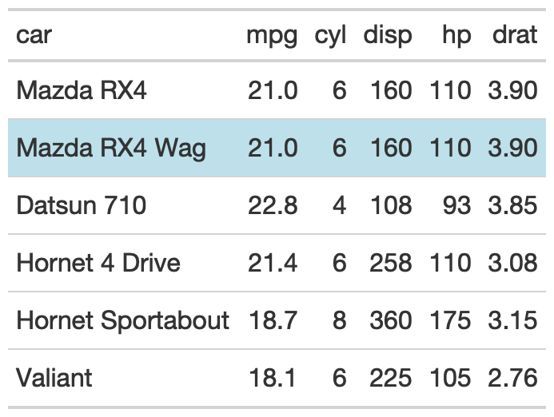

The gt_highlight_rows function takes an existing gt_tbl object and
adds highlighting color to the cell background of a specific row. The function
accepts rows only by number (not by logical expression) for now.
gt_highlight_rows( gt_object, columns = gt::everything(), rows = TRUE, fill = "#80bcd8", alpha = 0.8, font_weight = "bold", bold_target_only = FALSE, target_col = c() )
Arguments
| gt_object | An existing gt table object of class |
|---|---|
| columns | Specific columns to apply color to, accepts either |
| rows | The rows to apply the highlight to. Can either by a |
| fill | A character string indicating the fill color. If nothing is provided, then "#80bcd8" (light blue) will be used as a default. |
| alpha | An optional alpha transparency value for the color as single value in the range of 0 (fully transparent) to 1 (fully opaque). If not provided the fill color will either be fully opaque or use alpha information from the color value if it is supplied in the #RRGGBBAA format. |
| font_weight | A string or number indicating the weight of the font. Can be a text-based keyword such as "normal", "bold", "lighter", "bolder", or, a numeric value between 1 and 1000, inclusive. Note that only variable fonts may support the numeric mapping of weight. |
| bold_target_only | A logical of TRUE/FALSE indicating whether to apply bold to only the specific |
| target_col | A specific |
Value
An object of class gt_tbl.
Figures


Function ID
2-10
See also
Other Utilities:
add_text_img(),
fa_icon_repeat(),
fmt_pad_num(),
fmt_symbol_first(),
gt_add_divider(),
gt_double_table(),
gt_fa_column(),
gt_fa_rating(),
gt_fa_repeats(),
gt_highlight_cols(),
gt_img_rows(),
gt_merge_stack(),
gt_two_column_layout(),
gtsave_extra(),
pad_fn(),
tab_style_by_grp()
Examples
library(gt) basic_use <- head(mtcars[,1:5]) %>% tibble::rownames_to_column("car") %>% gt() %>% gt_highlight_rows(rows = 2, font_weight = "normal") target_bold_column <- head(mtcars[,1:5]) %>% tibble::rownames_to_column("car") %>% gt() %>% gt_highlight_rows( rows = 5, fill = "lightgrey", bold_target_only = TRUE, target_col = car )